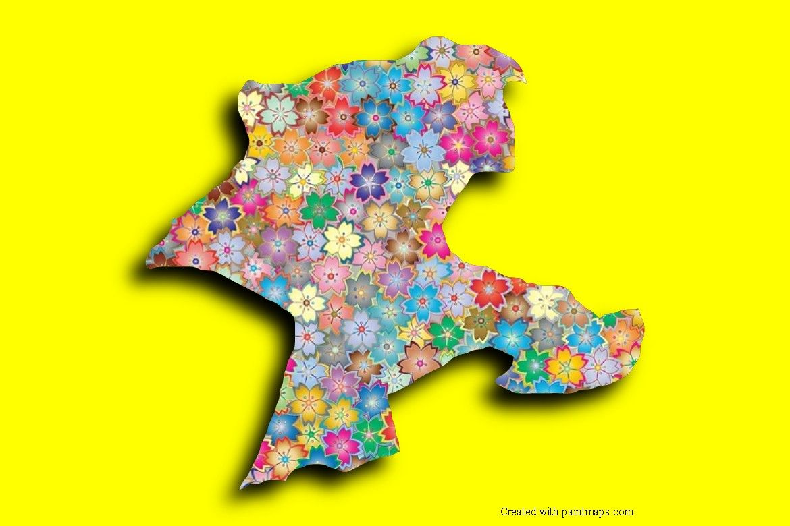

Tarih: İnsanlık tarihinin ilk bürokratik devlet yapısına ev sahipliği yapan UNESCO mirası Arslantepe Höyüğü ile medeniyetin köklerini barındırır.
Lezzet: Dünyanın "Kayısı Başkenti"dir; sofralarını ise kağıt kebabı ve eşsiz bulgur köfteleri süsler.
Ruh: Fırat'ın bereketiyle harmanlanmış, Battalgazi'nin manevi mirasını taşıyan, misafirperver ve dirençli insanların şehridir.